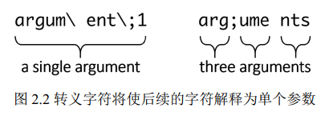

基本语法
CMake文件中的所有内容不是指令调用就是注释。
注释
- 单行注释
# - 多行注释
例如： 以一个方括号和任意数量的等号以及另一个方括号开始，到匹配的反转括号处结束。
#[=[
bracket comment
#[[
nested bracket comment
#]]
#]=]注：可以在括号注释的第一行添加另一个#来禁用多行注释。
执行指令
执行指令是CMake列表文件的基本功能，必须提供它的名称，后面跟着圆括号，在圆括号中
可以包含一个以空格分隔的指令参数列表。
例如：
message("hello world")这些指令包括三类：
- 脚本指令： 会改变指令处理器、访问变量的状态，并影响其他指令和环境
- 项目指令：这些指令在项目中可用，操纵项目状态并构建目标
CTest指令：这些指令在CTest脚本中可用，管理测试
指令参数
CMake提供了三种类型的参数：
- 方括号参数
- 引号参数
- 非引号参数
方括号参数
message([[multiline
bracket
argument
]])
message([==[
because we used two equal-signs "=="
following is still a single argument:
{ "petsArray" = [["mouse","cat"],["dog"]] }
]==]输出为：
$ cmake -P chapter02/01-arguments/bracket.cmake
multiline
bracket
argument
because we used two equal-signs "=="
following is still a single argument:
{ "petsArray" = [["mouse","cat"],["dog"]] }引号参数
引号参数包括空格，包括转义序列(与C++字符串相似)，也可以引用变量像 ${name}。
message("1. escape sequence: \" \n in a quoted argument")
message("2. multi...
line")
message("3. and a variable reference: ${CMAKE_VERSION}")输出为：
$ cmake -P chapter02/01-arguments/quoted.cmake
1. escape sequence: "
in a quoted argument
2. multi...
line
3. and a variable reference: 3.16.3非引号参数
不加引号的实参中的字符串默认不分隔。不加引号的实参计算转义序列和变量引用，但要小心
使用分号 (;)，就像在 CMake 中一样，其会当作分隔符对待。 CMake 会将包含它的参
数拆分为多个参数，可以使用反斜杠对其进行转义 (\;)。这就是 CMake 管理列表的方式。

message(a\ single\ argument)
message(two arguments)
message(three;separated;arguments)
message(${CMAKE_VERSION}) # a variable reference
message(()()()) # matching parentheses输出为：
$ cmake -P chapter02/01-arguments/unquoted.cmake
a single argument
twoarguments
threeseparatedarguments
3.16.3
()()()变量
CMake 中有三类变量：普通变量、缓存变量和环境变量，且它们还处在不同的作用域中。
基本的变量操作指令是set()和unset()
引用变量
求值时，CMake 将遍历作用域堆栈，并将 ${var} 替换为值，若没有找到变量则替换为空字符
串。
涉及变量类别时，变量引用的工作方式：
${}用于引用普通变量或缓存变量$ENV{}用于引用环境变量$CACHE{}用于引用缓存变量
环境变量
CMake 生成环境中用于启动 CMake 进程的变量的副本，并使它们在单一的全局作用域中可用。
CMake 还允许设置变量 set() 和取消设置变量 unset()，但更改只会在运行的 CMake 进
程中对本地副本进行，而不会对实际的系统环境进行更改; 此外，这些更改对于构建或测试的后续运行
不可见。
要修改或创建一个变量，使用 set(ENV{<variable>} <value>) 指令:
set(ENV(CXX) "clang++")要清除环境变量，使用 unset(ENV{<variable>}) :
unset(ENV(VERBOSE))缓存变量
缓存变量是存储在构建树中的 CMakeCache.txt 文件中的变量，包含在项目配置阶段收集的信息，
包括从系统(到编译器、链接器、工具和其他的路径)和通过GUI从用户收集的信息。缓存变量在脚本
中不可用，其只存在于项目中。
缓存变量可以通过 $CACHE{<name>} 语法来引用。
如何正确使用变量作用域
CMake 有两个作用域：
- 函数作用域：用于执行用
function()定义的自定义函数 - 目录作用域：当从
add_subdirectory()指令执行嵌套目录中的CMakeLists.txt文件时
当创建嵌套作用域时， CMake 只需用来自当前作用域的所有变量的副本填充。后续命令将影响这
些副本。但若完成了嵌套作用域的执行，所有的副本都会删除，而原始的父作用域将恢复。